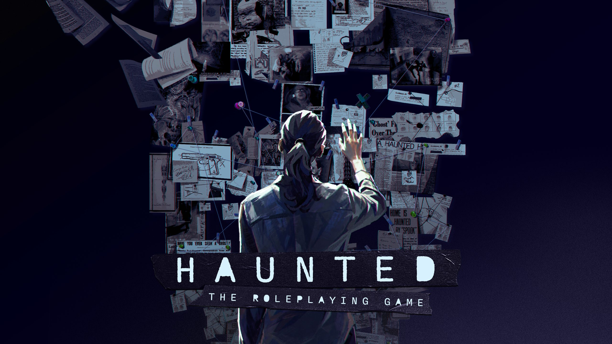

The case will break you. The past already has. Play a troubled investigator in a world where the dead don't stay quiet — and neither do your mistakes.
You are a detective in a city that smells like rain and something worse. The ghosts are real — every medium on the corner will tell you that for five dollars and a cold cup of coffee. The cults are real too, and the thugs, and the darkness that lives at the back of every case you've ever closed.
What you're carrying is real. That's the part they don't warn you about. Every investigator in Haunted has a wound at their center — a moment that broke something in the way they see the world. The case will keep moving. The city won't slow down. But sooner or later, if you want to be whole, you'll have to stop working long enough to go back to where it started.
Haunted is a tabletop RPG of supernatural noir investigation. You and your fellow investigators take on impossible cases, navigate a world where the dead have opinions and the living have agendas, and try to heal the thing that broke you before the next case does.
In the register of
You know the feeling. We built a game around it.
Launching on Gamefound — October 1, 2026.
The case is still open.
Sign up to stay on the case